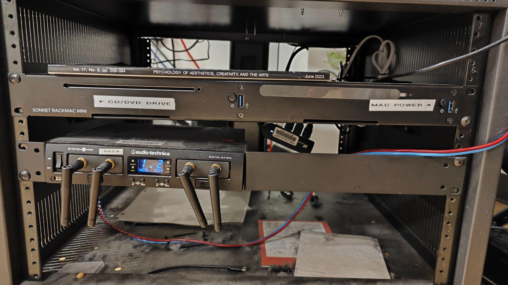

Drama Therapy Lab
Room PC Sound


- Power up the system: Ensure the Room PC is powered on (use the PC power button on the rack if needed).
- Use the Samsung remote to power on the TV.
- Set up audio: Select Samsung TV as the audio device on the Room PC.
- Open the audio bar and select HDMI as the input source (do not select HDMI(TV)).
Troubleshooting: If you don't have sound, verify that the Samsung TV is selected as your audio output device and that the audio bar is set to HDMI input mode.
Laptop Sound
- Connect your laptop to the TV with HDMI or a USB-C adapter.
- In your laptop's audio settings, set the audio output to Samsung TV (similar to the Room PC setup).
- Open the audio bar and select HDMI as the input source (do not select HDMI(TV)).
- To use the sound bar: Connect to the sound bar via the ¼ inch audio cable. Set the input source of the sound bar to Analog.
Troubleshooting: If using a MacBook, ensure the Samsung TV appears in your audio output options. For Windows laptops, check that the audio is routing through the HDMI connection to the TV.
External Sound Source
- Connect your external audio device to the sound bar using the ¼ inch audio cable.
- Set the sound bar input to Analog.
- Adjust volume levels on both your external device and the sound bar as needed.
Note: For phones or tablets, you may need a 3.5mm to ¼ inch adapter. Make sure your device's volume is turned up and the sound bar input is correctly set to Analog.